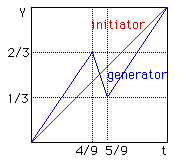
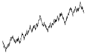

|  | First, we select the initiator and generator, and show how this choice is related to Brownian motion. |
 |
Second, we iterate the construction, obtaining a cartoon with the right scaling, but far too regular to be a forgery of natural Brownian motion. |
|  | Finally, we randomize the construction, obtaining good forgeries. |